The Trophy tab fits one screen. It was a 56-row list.seen
Problem
Where you browse cups (League → Table → a cup’s tab), each cup was a long list. The Lower League Trophy’s Round 1 was 56 rows, about two phone screens.
Fix
The Trophy tab now shows the cup’s colour, a headline (“Round 1”), your next tie (“Wed 9 Sep · away at Walsall”), a road with a segment for every round, and one button: Open the Trophy. It fits one 844 px screen.
Phone screens the Round 1 list tookabout 2 → 1
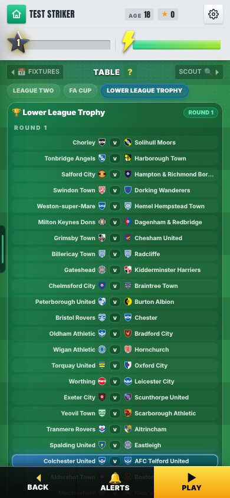
Before (B9): the Trophy tab lists Round 1.
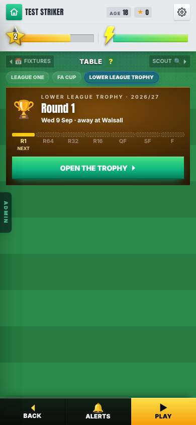
After: the tab is one card. Look at: the road (R1 next, then R64 to F) and Open the Trophy.
The cup’s own screenseen
Problem / Why
Not in the report.
Fix
Open the Trophy and you get its own screen.
Headline: Winners, Out, Not in it, Cup-tied, or bye.
Your road: each round, the club, home or away, and the score.
The bracket from the last 16 (Mikey’s).
Every round’s results, with ‹ › arrows. Byes sit under Round 1.
Still in it: the crests of the clubs left.
Bottom bar: Back · The draw · Play.
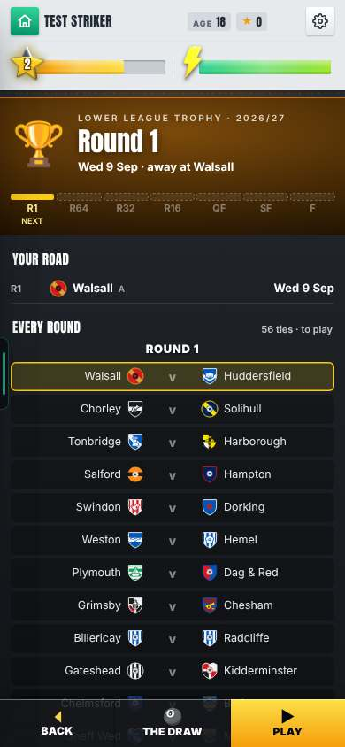
Look at: Round 1, before you play. Your road has one row. Every round lists the ties, yours highlighted. The bottom bar says Back, The draw, Play.
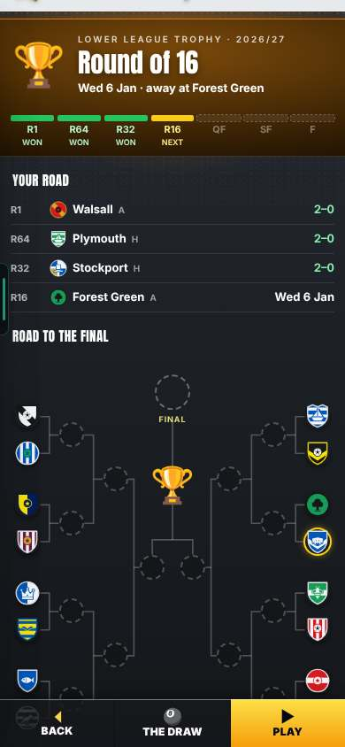
Look at: before the Round of 16. Three wins (2–0 each) on your road. The bracket shows the clubs left, yours ringed.
More pictures (3)
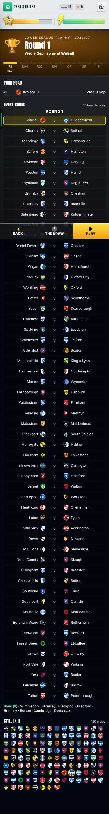
Look at: the whole cup screen in one tall picture.
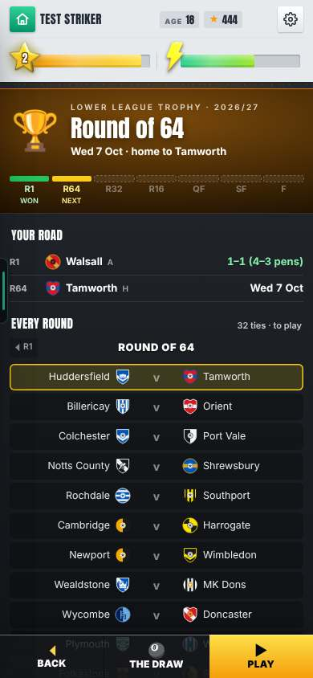
Look at: after the Round 1 win.
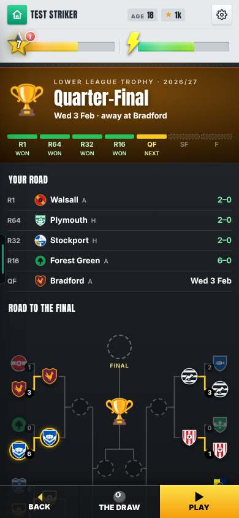
Look at: before the quarter-finals.
After a match: the results board and the drawseen
Problem
The after-match round-up (results board, “Road to the Final” bracket, the cup draw) was Mikey’s FA Cup screen. B9 had wired those to the Trophy.
Why
Not in the report.
Fix
The Trophy uses the same round-up and draw as the FA Cup. Mikey’s Board, Bracket and CupDrawReveal are reused, not copied.
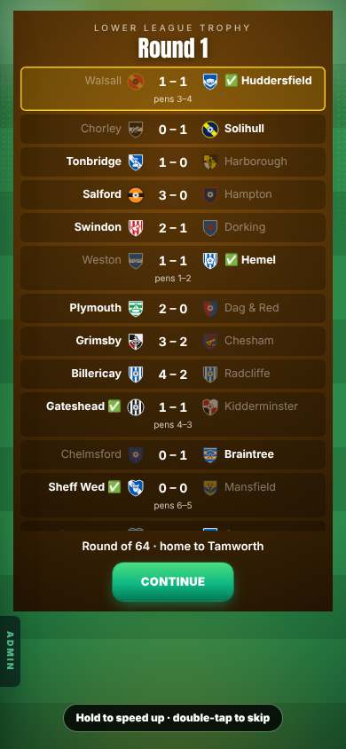
Look at: the Round 1 results. Walsall 1–1 Huddersfield, penalties 3–4: a tick by Huddersfield. The hint at the bottom says: hold to speed up, double-tap to skip.
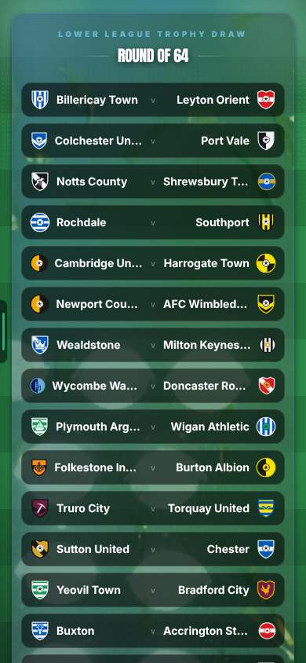
Look at: the Round of 64 draw, finished. Every tie names two clubs with their crests.
More pictures (3)
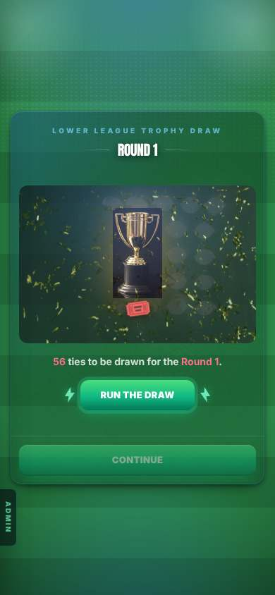
Look at: the draw starting.
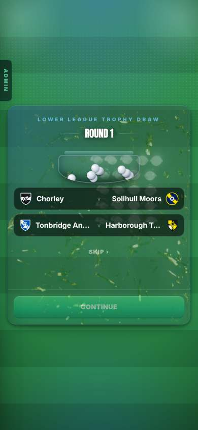
Look at: the draw running.
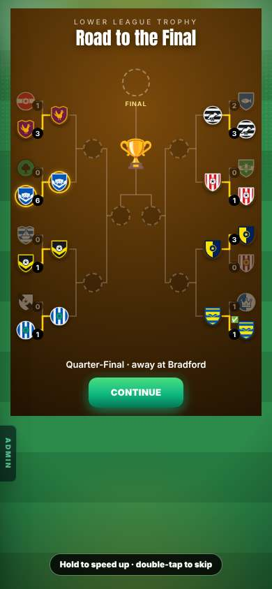
Look at: the bracket on the round-up screen.
The FA Cup and League Cup work the same wayseen
Problem
The FA Cup tab listed every tie.
Fix
One screen for all three domestic cups. The FA Cup and League Cup tabs work like the Trophy tab, each in its own colour. The list of every tie is one tap away.
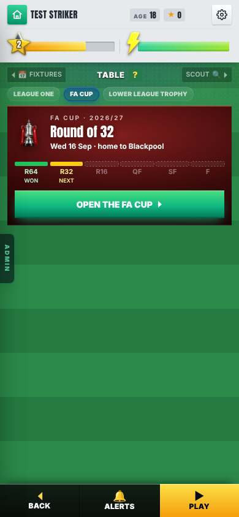
Look at: the FA Cup tab in dark red. Round of 32 next. Open the FA Cup.
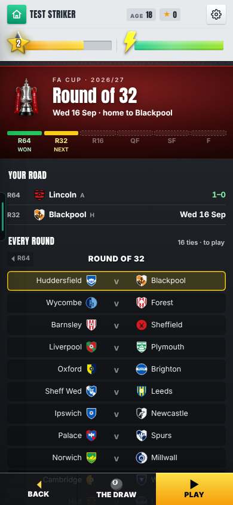
Look at: the FA Cup screen. Your road, then every round with a ‹ R64 arrow.
KNOWN ISSUES
A Premier League career still shows the Trophy tab as “Not in it”openyour call
Problem
A Premier League career is never in the Trophy. It still sees the tab, and the tab says “Not in it”.
A tie you only watched goes straight back to Homefound, not fixed
Problem
If you only watch a tie, the game goes straight back to Home. No round-up shows.
Status
Not fixed. The FA Cup does the same.
After a Round 1 bye no draw pops upfound, not fixed
Problem
A club on a Round 1 bye gets no draw pop-up after it.
Status
You can see the draw with “The draw” on the cup screen.
THE NUMBERS
The numbers, if you want them
Before and after. The Trophy’s Round 1 was 56 rows. The tab is now one card.
Phone screens for the Round 1 listabout 2 → 1
Played in the real game (League One career at Huddersfield, real Sim): Round 1 went 1–1, then 4–3 on penalties. Penalties come straight away, as the rules say.
Reused, not copied. Mikey’s Board and Bracket, CupDrawReveal, cupBoard and cupBracket. The main game file was not touched.
VIDEOS
No clip is planned for this build.
SEEN / NOT SEEN
Seen on a screen
The Trophy tab and the cup screen at 390 × 844 in the real game (a League One career at Huddersfield)
Round 1 played through the real Sim: 1–1, then 4–3 on penalties
The round-up board, the draw, the bracket, and the FA Cup tab and screen
Measured (numbers)
Reasoned, not seen
Hiding the Trophy tab for a Premier League career: not built, a question
Not seen / not done
A phone: not tried
A Premier League career: still shows the tab as Not in it